- 583. Hol kell közlekedni a párhuzamos közlekedésre alkalmas úttesten? #703514
- Általában a külső (jobb szélső) forgalmi sávban.
- Mindig a belső forgalmi sávban.
- Mindig a külső forgalmi sávban.
- 584. Figyelembe kell-e venni a párhuzamos közlekedés szempontjából az autóbusz-forgalmi sávot? #703516
- Nem.
- Igen.
- 585. Figyelembe kell-e venni a párhuzamos közlekedés szempontjából a kerékpársávot? #703518
- Nem.
- Igen.
- 586. Szabad-e a párhuzamos közlekedésre alkalmas úttesten a forgalmi sávokat a gyorsabb továbbhaladás érdekében kis távolságon belül ismételten változtatni? #703519
- Nem.
- Igen.
- 587. Szabad-e a párhuzamos közlekedésre alkalmas úttest felezővonalát átlépni? #703520
- A balra bekanyarodás és a megfordulás esetét kivéve nem.
- Igen, kellő körültekintéssel bárhol.
- 588. Szabad-e a párhuzamos közlekedésre alkalmas úttesten két járműnek ugyanabban a forgalmi sávban egymás mellett elhaladni? #703521
- Nem, kivéve az egy nyomon haladó jármű melletti elhaladást.
- Igen.
- 589. Szabad-e a párhuzamos közlekedésre alkalmas úttesten kijelölt gyalogos-átkelőhelyen másik jármű mellett elhaladni? #703522
- Nem.
- Igen.
- 590. Szabad-e forgalmi sávot változtatni a párhuzamos közlekedésre alkalmas úttesten, ha a forgalmi sávokban összefüggő járműoszlopok alakultak ki? #703523
- Csak akkor, ha a járművezető bekanyarodásra vagy megállásra készül fel.
- Igen, korlátozás nélkül.
- Összefüggő járműoszlopok esetén sosem szabad forgalmi sávot változtatni.
- 591. Mikor szabad közlekedni a kommunális szemét szállítására szolgáló járművel az autóbusz-forgalmi sávban? #703524
- 20 és 06 óra között.
- 06 és 22 óra között.
- Sosem.
- 592. Mely járművek kötelesek a kapaszkodósávon közlekedni? #714874
- Egyéb jelzés hiányában csak azok a járművek, amelyek lakott területen kívül 70 km/h, lakott területen pedig 40 km/h sebességnél lassabban haladnak.
- Egyéb jelzés hiányában csak azok a járművek, amelyek lakott területen kívül 90 km/h, lakott területen pedig 50 km/h sebességnél lassabban haladnak.
- Egyéb jelzés hiányában csak azok a járművek, amelyek lakott területen kívül 60 km/h, lakott területen pedig 30 km/h sebességnél lassabban haladnak.
- 593. Szabad-e az autóbusz-forgalmi sávban kétkerekű segédmotoros kerékpárral folyamatosan közlekedni? #714876
- Igen, az autóbusz- és trolibuszforgalom zavarása nélkül.
- Nem.
- Igen, feltétel nélkül.
- 594. Útburkolati jelekkel jelölt háromsávos úton közlekedik személygépkocsival. Szabad-e ráhajtani a harmadik (belső) forgalmi sávra? #714889
- Igen.
- Nem.
- Csak bekanyarodási szándékkal.
- 595. Haladhat-e személygépkocsival folyamatosan a harmadik (belső) forgalmi sávban a lakott területen lévő, útburkolati jelekkel jelölt háromsávos úton? #714890
- Igen, az Ön mögött gyorsabban haladók akadályozása nélkül.
- Igen, de csak bekanyarodási szándékkal.
- Nem.
- 596. Közlekedhet-e az autóbusz-forgalmi sávban a betegszállító gépjármű? #714891
- Igen, az autóbusz- és trolibuszforgalom zavarása nélkül.
- Igen, feltétel nélkül.
- Nem.
- 597. Szabad-e elhaladni személygépkocsival ugyanabban a forgalmi sávban egy kétkerekű motorkerékpár mellett? #714892
- Igen, amennyiben a manőver során a biztonságos oldaltávolság megtartható.
- Nem, mert az előzés közben minden esetben igénybe kell venni a másik forgalmi sávot is.
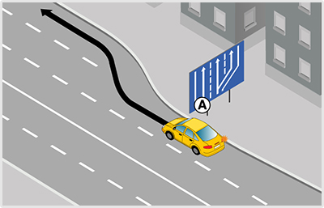
- 598. Ön az ’A’ jelű személygépkocsit vezeti. Lakott területen szabályosan közlekedik a képen látható kapaszkodósávon? #715111
- Igen.
- Igen, de csak akkor, ha 40 km/h sebességnél lassabban halad.
- Nem.
- 599. Mikor köteles a képen látható ’A’ jelű személygépkocsi lakott területen a kapaszkodósávon haladni? #715113
- Ha 40 km/h sebességnél lassabban halad.
- Ha 50 km/h sebességnél lassabban halad.
- Mindig, ha más nem közlekedik az úton.
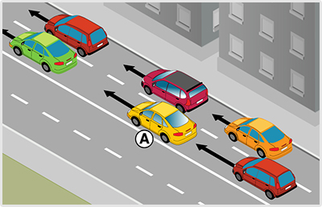
- 600. A képen látható helyen az ’A’ jelű személygépkocsi megelőzhet-e egyszerre több járművet? #715141
- Igen.
- Nem.
- Csak egyet, majd a két személygépkocsi közé vissza kell térnie.
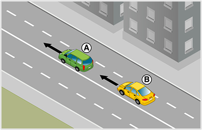
- 601. Lakott területen mikor közlekedhet az ’A’ jelű gépkocsi az ábrán látható helyen a belső forgalmi sávban? #715268
- Csak akkor, ha a mögötte gyorsabban haladó járművek közlekedését nem akadályozza.
- Csak akkor, ha más járművet előz.
- Csak akkor, ha balra kíván bekanyarodni.
- 602. Milyen körforgalmakban kell a párhuzamos közlekedés szabályait alkalmazni? #721769
- A párhuzamos közlekedésre alkalmas körforgalmakban.
- Csak a háromsávos körforgalmakban.
- Minden körforgalomban.
- 603. Közlekedhet-e az autóbusz-forgalmi sávban sürgősségi betegellátásra rendszeresített gépjármű? #721770
- Igen, amennyiben megkülönböztető jelzést adó készülékkel van felszerelve.
- Igen, amennyiben figyelmeztető jelzést adó készülékkel van felszerelve.
- Igen, feltétel nélkül.
- 604. Közlekedhet-e az autóbusz-forgalmi sávban a hivatásos katasztrófavédelmi szervek gépjárműve? #721771
- Igen, amennyiben megkülönböztető jelzést adó készülékkel van felszerelve.
- Igen, amennyiben figyelmeztető jelzést adó készülékkel van felszerelve.
- Igen, feltétel nélkül.
- 605. Közlekedhet-e az autóbusz-forgalmi sávban a tűzoltó egyesületek közvetlen helyszíni beavatkozásra rendszeresített gépjárműve? #721772
- Igen, amennyiben megkülönböztető jelzést adó készülékkel van felszerelve.
- Igen, amennyiben figyelmeztető jelzést adó készülékkel van felszerelve.
- Igen, feltétel nélkül.
- 606. Közlekedhet-e a személytaxi az autóbusz-forgalmi sávban? #721774
- Igen, az autóbusz- és trolibuszforgalom zavarása nélkül.
- Nem.
- Igen, feltétel nélkül.
- 607. Szabad-e folyamatosan előzni motorkerékpárral és személygépkocsival a párhuzamos közlekedésre alkalmas úttesten? #721776
- Igen, feltéve, hogy ezzel a mögötte gyorsabban haladó járművek közlekedését nem akadályozza.
- Igen, feltétel nélkül.
- A folyamatos előzés mindig tilos.
- 608. Szabad-e a lakott területen lévő háromsávos út középső forgalmi sávjában közlekedve elhaladni az Öntől balra lévő, legbelső forgalmi sávban lassabban haladó jármű mellett? #721777
- Igen, fokozott figyelemmel.
- Nem.
- 609. Figyelembe kell-e venni a párhuzamos közlekedés szempontjából az autóbusz-forgalmi sávot és az autóbuszöblöt? #721783
- Nem.
- Igen.
- Csak motorkerékpárral közlekedve.
- 610. Figyelembe kell-e venni a párhuzamos közlekedés szempontjából a kapaszkodósávot? #721784
- Nem.
- Igen.
- Csak motorkerékpárral közlekedve.
- 611. Figyelembe kell-e venni a párhuzamos közlekedés szempontjából a lassító- és gyorsítósávot? #721785
- Nem.
- Igen.
- Csak motorkerékpárral közlekedve.
- 612. Figyelembe kell-e venni a párhuzamos közlekedés szempontjából a kerékpársávot? #721786
- Nem.
- Igen.
- Csak segédmotoros kerékpárral.
- 613. Szabad-e a forgalmi sávokat - a gyorsabb előrehaladás érdekében - kis távolságon belül ismételten változtatni? #721787
- Nem.
- Igen, szabad.
- 614. Haladhat-e 50 km/h sebességgel a képen látható ’A’ jelű személygépkocsi lakott területen a kapaszkodósávon? #721794
- Igen.
- Nem, mivel csak 40 km/h sebességnél lassabban közlekedők haladhatnak a kapaszkodósávon.
- Nem, mert azon csak tehergépkocsik közlekedhetnek.
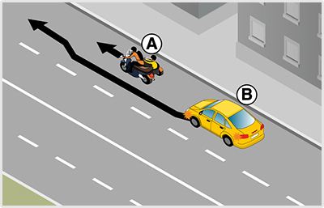
- 615. A képen látható helyen a ’B’ jelű személygépkocsi vezetője megelőzheti-e ugyanabban a forgalmi sávban az ’A’ jelű oldalkocsis motorkerékpárost? #721812
- Nem, mert ennek a két járműnek ugyanabban a forgalmi sávban tilos egymás mellett elhaladni.
- Igen, mert minden motorkerékpár mellett szabad elhaladni ugyanabban a forgalmi sávban.
- 616. Ön a ’B’ jelű személygépkocsit vezeti. Megelőzheti-e a képen látható módon az ’A’ jelű oldalkocsis motorkerékpárost? #721813
- Nem.
- Igen.
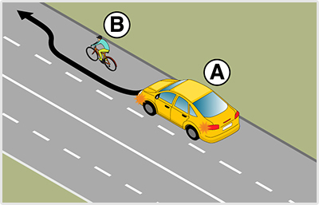
- 617. Ön az ’A’ jelű személygépkocsit vezeti. Elhaladhat-e ugyanabban a forgalmi sávban a ’B’ jelű kerékpáros mellett? #721822
- Ha biztonságos oldaltávolságot tud tartani, akkor igen.
- Nem, mert párhuzamos közlekedésre alkalmas úton az előzés esetén köteles igénybevenni a másik forgalmi sávot.
- Nem, mert ezen a helyen ugyanabban a forgalmi sávban nem előzheti meg a kerékpárost.
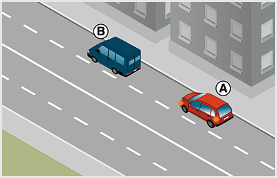
- 618. Köteles-e az ’A’ jelű személygépkocsi vezetője lakott területen a ’B’ jelű gépkocsi megelőzése után a jobb szélső forgalmi sávba visszatérni? #721829
- Nem.
- Igen.
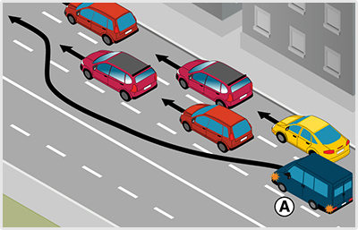
- 619. Lakott területen szabályosan előz a képen látható ’A’ jelű személygépkocsi? #721841
- Igen.
- Nem, mert három forgalmi sávos úton a legbelső forgalmi sávban csak motorkerékpár hajthat végre előzést.
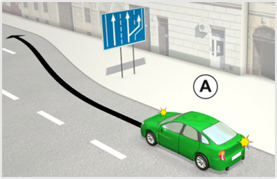
- 620. Haladhat-e 50 km/h sebességgel a képen látható ’A’ jelű személygépkocsi lakott területen a kapaszkodósávon? #722147
- Igen.
- Nem, mivel csak 40 km/h sebességnél lassabban közlekedők haladhatnak a kapaszkodósávon.
- Nem, mert azon csak tehergépkocsik közlekedhetnek.
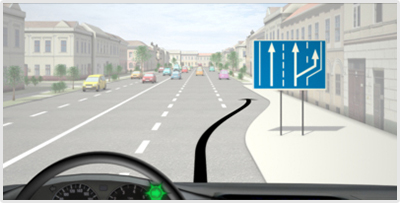
- 621. Ön a kormánykerékkel jelzett járművet vezeti. Haladhat-e 50 km/h sebességgel lakott területen a kapaszkodósávon? #722159
- Igen.
- Nem, mivel csak 40 km/h sebességnél lassabban közlekedők haladhatnak a kapaszkodósávon.
- Nem, mert azon csak tehergépkocsik közlekedhetnek.
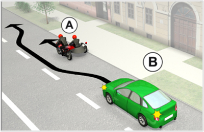
- 622. Köteles-e a ’B’ jelű személygépkocsi vezetője az oldalkocsis motorkerékpáros előzése közben irányjelzőjét használni? #722202
- Igen, mert a tervezett manőver nem hajtható végre azonos forgalmi sávon belül.
- Nem, mert a motorkerékpárosok előzésekor nem kell iráűnyjelzőt használni.
- 623. A képen látható helyen a ’B’ jelű személygépkocsi vezetője megelőzheti-e ugyanabban a forgalmi sávban az ’A’ jelű oldalkocsis motorkerékpárost? #722203
- Nem, mert ennek a két járműnek ugyanabban a forgalmi sávban tilos egymás mellett elhaladni.
- Igen, mert minden motorkerékpár mellett szabad elhaladni ugyanabban a forgalmi sávban.
- 624. Ön a ’B’ jelű személygépkocsit vezeti. Megelőzheti-e a képen látható módon az ’A’ jelű oldalkocsis motorkerékpárost? #722204
- Nem.
- Igen.
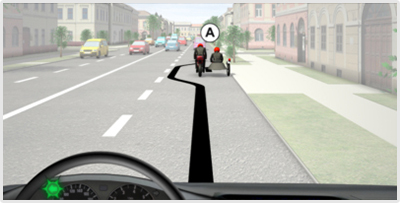
- 625. Ön a kormánykerékkel jelzett járművet vezetve köteles-e az oldalkocsis motorkerékpáros előzése közben irányjelzőjét használni? #722215
- Igen, mert a tervezett manőver nem hajtható végre azonos forgalmi sávon belül.
- Nem, mert a motorkerékpárosok előzésekor nem kell iráűnyjelzőt használni.
- 626. Ön a kormánykerékkel jelzett járművet vezetve megelőzheti-e ugyanabban a forgalmi sávban az ’A’ jelű oldalkocsis motorkerékpárost? #722216
- Nem, mert ennek a két járműnek ugyanabban a forgalmi sávban tilos egymás mellett elhaladni.
- Igen, mert minden motorkerékpár mellett szabad elhaladni ugyanabban a forgalmi sávban.
- 627. Ön a kormánykerékkel jelzett járművet vezeti. Megelőzheti-e a képen látható módon az ’A’ jelű oldalkocsis motorkerékpárost? #722217
- Nem.
- Igen.
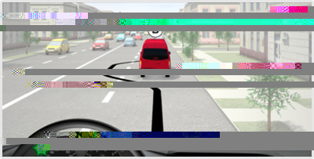
- 628. Ön a kormánykerékkel jelzett személygépkocsit vezetve köteles-e lakott területen a ’B’ jelű gépkocsi megelőzése után a jobb szélső forgalmi sávba visszatérni? #722531
- Nem.
- Igen.
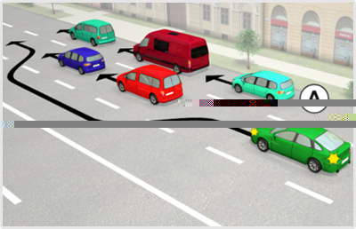
- 629. Lakott területen szabályosan előz a képen látható ’A’ jelű személygépkocsi? #723034
- Igen.
- Nem.
- 630. Lakott területen az ’A’ jelű személygépkocsi köteles-e a személygépkocsik megelőzése után a jobb oldali forgalmi sávba visszatérni? #723035
- Nem.
- Igen.
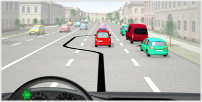
- 631. Ön lakott területen a kormánykerékkel jelzett járművet vezetve szabályosan előz? #723041
- Igen.
- Nem.
- 632. Ön a kormánykerékkel jelzett járművet lakott területen vezetve köteles-e a személygépkocsik megelőzése után a jobb oldali forgalmi sávba visszatérni? #723042
- Nem.
- Igen.
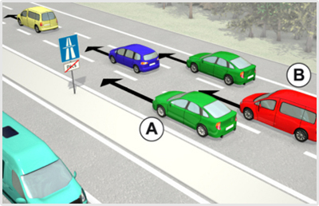
- 633. Ön az ’A’ jelű személygépkocsival a lakott területen kívüli autópálya legbelső forgalmi sávjában közlekedik. Van-e valamilyen kötelezettsége? #723355
- Igen, a mögötte gyorsabban haladó járművek közlekedését nem akadályozhatja.
- Igen, köteles az előzést folyamatosan irányjelzővel jelezni.
- Igen, minden körülmények között legalább 130 km/h sebességgel kell haladnia.
- 634. Ön az ’A’ jelű személygépkocsit vezeti. Haladhat-e folyamatosan a lakott területen kívüli autópálya belső forgalmi sávjában? #723356
- Igen, mindaddig, amíg a középső forgalmi sávban haladó járműveket előzi.
- Igen, megkötés nélkül, hiszen személygépkocsival az autópálya bármelyik forgalmi sávjában közlekedhet folyamatosan.
- Nem, a belső forgalmi sávban csak motorkerékpár és megkülönböztető jelzéseit használó jármű közlekedhet.
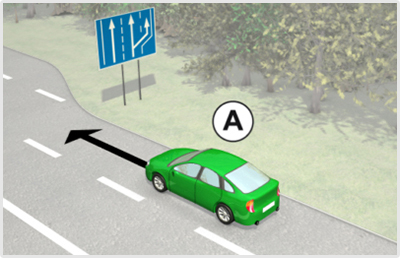
- 635. Az ’A’ jelű személygépkocsi lakott területen kívül 80 km/h sebességgel halad. Szabályos helyen közlekedik? #723364
- Igen.
- Nem, mert a kapaszkodósávon köteles haladni.
- 636. Lakott területen kívül a ködös idő miatt az ’A’ jelű személygépkocsi csak 60 km/h sebességgel halad. Szabályos helyen közlekedik-e? #723365
- Nem, mert ezzel a sebességgel a kapaszkodósávon kell haladnia.
- Igen, mert rossz látási viszonyok esetén ez a legbiztonságosabb forgalmi sáv.
- Igen, mindaddig, amíg az úton nem érkezik másik jármű.
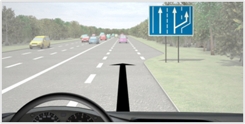
- 637. Ön a kormánykerékkel jelzett személygépkocsival lakott területen kívül 80 km/h sebességgel halad. Szabályos helyen közlekedik? #723374
- Igen.
- Nem, mert a kapaszkodósávon köteles haladni.
- 638. Ön lakott területen kívül a ködös idő miatt a kormánykerékkel jelzett személygépkocsival csak 60 km/h sebességgel halad. Szabályos helyen közlekedik? #723375
- Nem, mert ezzel a sebességgel a kapaszkodósávon kell haladnia.
- Igen, mert rossz látási viszonyok esetén ez a legbiztonságosabb forgalmi sáv.
- Igen, mindaddig, amíg az úton nem érkezik másik jármű.
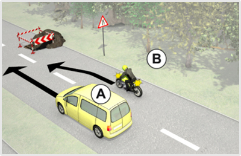
- 639. Melyik jármű haladhat tovább elsőként a képen látható helyen? #723392
- Az ’A’ jelű személygépkocsi.
- A ’B’ jelű motorkerékpár.
- Kölcsönös megegyezés alapján haladhatnak tovább.
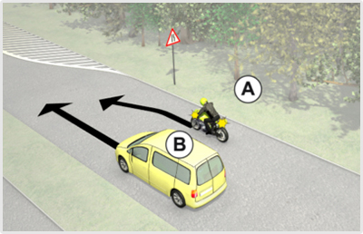
- 640. A képen látható helyen melyik jármű haladhat tovább elsőként? #723421
- A ’B’ jelű személygépkocsi.
- Az ’A’ jelű motorkerékpár.
- Kölcsönös megegyezés alapján haladhatnak tovább.
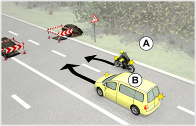
- 641. A képen látható helyen mindkét jármű csak irányváltoztatással tudja az útját folytatni. Melyik jármű haladhat tovább elsőként? #723441
- Az ’A’ jelű jármű.
- A ’B’ jelű személygépkocsi.
- Kölcsönös megegyezés alapján haladhatnak tovább.
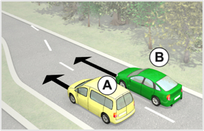
- 642. Melyik jármű haladhat tovább elsőként az ábrán látható helyen? #723466
- Az ’A’ jelű személygépkocsi.
- A ’B’ jelű személygépkocsi.
- Kölcsönös megegyezés alapján haladhatnak tovább.
- 643. Ön az ’A’ jelű személygépkocsit vezeti. Az ábrán látható helyen... #723467
- elsőbbsége van a ’B’ jelű személygépkocsival szemben.
- elsőbbséget kell adnia a ’B’ jelű személygépkocsi részére.
- meg kell egyezniük a továbbhaladási sorrendben.
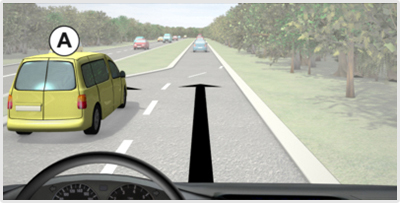
- 644. Ön a kormánykerékkel jelzett járművet vezeti. Melyik jármű haladhat tovább elsőként az ábrán látható helyen? #723481
- Az ’A’ jelű személygépkocsi.
- Az Ön által vezetett jármű.
- Kölcsönös megegyezés alapján haladhatnak tovább.
- 645. Ön a kormánykerékkel jelzett járművet vezeti. Az ábrán látható helyen... #723482
- elsőbbséget kell adnia az ’A’ jelű személygépkocsi részére.
- elsőbbsége van az ’A’ jelű személygépkocsival szemben.
- meg kell egyezniük a továbbhaladási sorrendben.
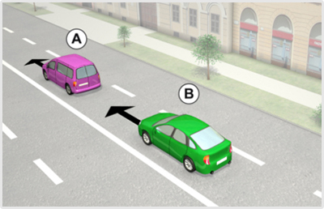
- 646. Ön az ’A’ jelű gépkocsit lakott területen az ábrán látható helyen vezeti. Válassza ki az alábbiak közül a helyes állítást! #723491
- Ha akadályozza az Ön mögött gyorsabban haladó ’B’ jelű személygépkocsi közlekedését, köteles a jobb szélső forgalmi sávba sorolni.
- Ezen a helyen csak akkor közlekedhet a belső forgalmi sávban, ha más járművet előz.
- Ha az útvonalra engedélyezett maximális sebességgel halad, nem köteles a jobb szélső forgalmi sávba sorolni.
- 647. Ön a ’B’ jelű személygépkocsit lakott területen vezeti. Mikor jár el szabályosan? #723492
- Ha utolérve a lassabban haladó ’A’ jelű gépkocsit, megvárja, amíg az lehúzódik a jobb szélső forgalmi sávba.
- Ha előzési szándékának jelzésére hangjelzést ad.
- Ha követési távolságon belül közelíti meg a gépkocsit, és előzési szándékának jelzésére fényjelzést ad.
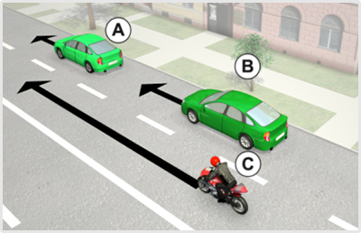
- 648. Ön a ‘B’ jelű személygépkocsit vezeti. Köteles-e olyan távolságban követni az Ön előtt haladó személygépkocsit, hogy a motorkerékpáros biztonságosan be tudjon sorolni Önök közé? #723595
- Nem, nincs ilyen kötelezettsége.
- Igen.
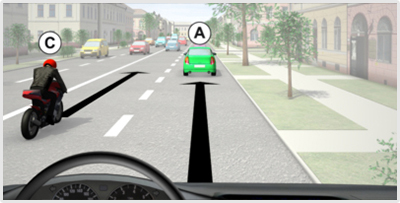
- 649. Ön a kormánykerékkel jelzett járművet vezeti. Köteles-e olyan távolságban követni az Ön előtt haladó személygépkocsit, hogy a motorkerékpáros biztonságosan be tudjon sorolni Önök közé? #723597
- Nem, nincs ilyen kötelezettsége.
- Igen.
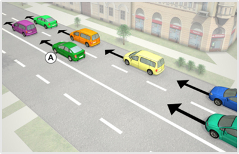
- 650. Elhaladhat-e az ’A’ jelű jármű egyszerre több jármű mellett az ábrázolt helyen? #723600
- Igen.
- Nem.
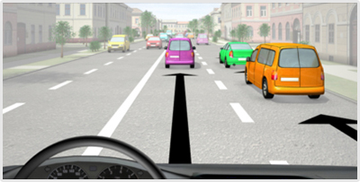
- 651. Ön a kormánykerékkel jelzett járművet vezeti. A képen látható helyen megelőzhet-e egyszerre több járművet? #723604
- Igen.
- Nem.
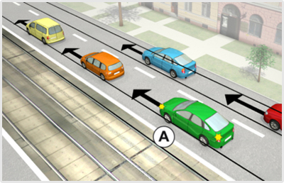
- 652. Ön az ’A’ jelű járművet vezeti. Tovább közlekedhet-e lakott területen a belső forgalmi sávban? #723663
- Igen, mindaddig, amíg a mögötte gyorsabban haladó járművek közlekedését nem akadályozza.
- Igen, de csak akkor, ha a következő útkereszteződésben balra kíván kanyarodni.
- Nem, a belső forgalmi sávban csak előzés céljából szabad közlekedni.

- 653. Ön a kormánykerékkel jelzett személygépkocsit vezeti. Tovább közlekedhet-e lakott területen a belső forgalmi sávban? #723669
- Igen, mindaddig, amíg a mögötte gyorsabban haladó járművek közlekedését nem akadályozza.
- Igen, de csak akkor, ha a következő útkereszteződésben balra kíván kanyarodni.
- Nem, a belső forgalmi sávban csak előzés céljából szabad közlekedni.

- 654. Mit jelent a képen látható közúti jelzőtábla? #723673
- ’Kapaszkodósáv’.
- ’A besorolás rendje a következő útkereszteződésben’.
- ’Lassítósáv’.

- 655. Az ’A’ jelű jármű lakott területen kívül 75 km/h sebességgel halad. Szabályos helyen közlekedik? #723677
- Igen.
- Nem, mert a kapaszkodósávon köteles haladni.
- Nem, mert a megengedettnél lassabban történő haladása miatt ezen a sávon veszélyhelyzetet teremt.
- 656. Az ’A’ jelű jármű lakott területen kívül a ködös idő miatt csak 60 km/h sebességgel halad. Szabályos helyen közlekedik? #723678
- Nem, mert ezzel a sebességgel csak a kapaszkodósávon szabad haladnia.
- Igen, mert rossz látási viszonyok esetén nem köteles senki a kapaszkodósávon haladni.
- Igen, mindaddig, amíg az úton nem érkezik másik jármű.

- 657. Ön a kormánykerékkel jelzett személygépkocsival lakott területen kívül 75 km/h sebességgel halad. Szabályos helyen közlekedik? #723687
- Igen.
- Nem, mert a kapaszkodósávon köteles haladni.
- Nem, mert a megengedettnél lassabban történő haladása miatt ezen a sávon veszélyhelyzetet teremt.
- 658. Ön a kormánykerékkel jelzett személygépkocsival lakott területen kívül a ködös idő miatt csak 60 km/h sebességgel halad. Szabályos helyen közlekedik? #723688
- Nem, mert ezzel a sebességgel csak a kapaszkodósávon szabad haladnia.
- Igen, mert rossz látási viszonyok esetén nem köteles senki a kapaszkodósávon haladni.
- Igen, mindaddig, amíg az úton nem érkezik másik jármű.

- 659. Mit jelent a képen látható közúti jelzőtábla? #723690
- ’Kapaszkodósáv’.
- ’A besorolás rendje a következő útkereszteződésben’.
- ’Lassítósáv’.

- 660. Mit jelent a képen látható közúti jelzőtábla. #723696
- ’Kapaszkodósáv’.
- ’A besorolás rendje a következő útkereszteződésben’.
- ’Lassítósáv’.

- 661. Mikor köteles az ’A’ jelű jármű lakott területen kívül a kapaszkodósávon közlekedni? #723699
- Ha 60 km/h sebességnél lassabban halad.
- Ha 80 km/h sebességgel halad.
- Ha 90 km/h sebességgel halad.
- 662. Az ’A’ jelű jármű lakott területen kívül 60 km/h sebességgel halad. Szabályos helyen közlekedik? #723700
- Igen.
- Nem, mert a kapaszkodósávon köteles haladni.
- Nem, mert a megengedettnél lassabban történő haladása miatt ezen a forgalmi sávon veszélyhelyzetet teremt.

- 663. Ön a kormánykerékkel jelzett személygépkocsit vezeti. Mikor köteles lakott területen kívül a kapaszkodósávon közlekedni? #723709
- Ha 60 km/h sebességnél lassabban halad.
- Ha 80 km/h sebességgel halad.
- Ha 90 km/h sebességgel halad.
- 664. Ön a kormánykerékkel jelzett személygépkocsival lakott területen kívül 60 km/h sebességgel halad. Szabályos helyen közlekedik? #723710
- Igen.
- Nem, mert a kapaszkodósávon köteles haladni.
- Nem, mert a megengedettnél lassabban történő haladása miatt ezen a forgalmi sávon veszélyhelyzetet teremt.
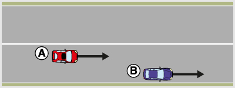
- 665. Szabályosan közlekedik lakott területen a képen látható helyen az ’A’ jelű személygépkocsi vezetője? #723963
- Csak akkor, ha a ’B’ jelű gépkocsi megelőzése után visszahúzódik a jobb szélső forgalmi sávba.
- Igen, mert lakott területen a menetirány szerinti jobb oldalon bárhol szabad közlekedni.
- Igen, mert lakott területen személygépkocsival bármelyik forgalmi sávban szabad közlekedni az ilyen úton.
- 666. Alkalmazni kell-e a képen látható úton a párhuzamos közlekedés szabályait? #723964
- Igen, mivel két gépkocsi biztonságosan elfér egymás mellett a menetirány szerinti jobb oldalon.
- Nem, mert nem látszódnak a forgalmi sávokat elválasztó útburkolati jelek.
- Igen, de csak lakott területen kívül.
- 667. Köteles-e az ’A’ jelű személygépkocsi a ’B’ jelű gépkocsi megelőzése után a jobb szélső forgalmi sávba visszatérni, ha több jármű megelőzésére nincs lehetősége? #723965
- Igen.
- Nem.
- Csak lakott területen kívül.
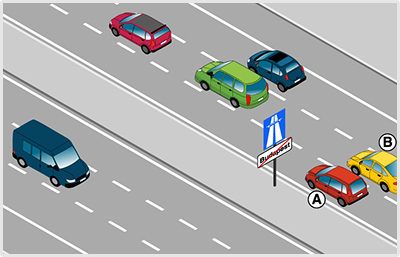
- 668. Ön az ’A’ jelű gépkocsival az autópálya legbelső forgalmi sávjában közlekedik. Van-e valamilyen kötelezettsége? #723973
- Igen, az Ön mögött gyorsabban haladó járművek közlekedését nem akadályozhatja.
- Igen, köteles az előzést folyamatosan irányjelzővel jelezni.
- Igen, minden körülmények között legalább 130 km/h sebességgel kell haladnia.
- 669. Ön az ’A’ jelű gépkocsit vezeti. Tovább haladhat-e az autópálya belső forgalmi sávjában? #723974
- Igen, mindaddig, amíg a középső forgalmi sávban haladó járműveket előzi.
- Igen, megkötés nélkül, hiszen személygépkocsival az autópálya bármelyik forgalmi sávjában közlekedhet.
- Nem, a belső forgalmi sávban csak motorkerékpár és megkülönböztető jelzéseit használó jármű közlekedhet.
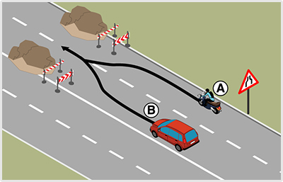
- 670. A képen látható helyen mindkét jármű csak irányváltoztatással tudja az útját folytatni. Melyik jármű haladhat tovább elsőként? #724031
- A jobbról érkező ’A’ jelű motorkerékpár.
- A balról érkező ’B’ jelű személygépkocsi.
- Kölcsönös megegyezés alapján haladhatnak tovább.
- 671. A képen látható helyen melyik jármű haladhat tovább elsőként? #724032
- Az ’A’ jelű motorkerékpár.
- A ’B’ jelű személygépkocsi.
- Kölcsönös megegyezés alapján haladhatnak tovább.
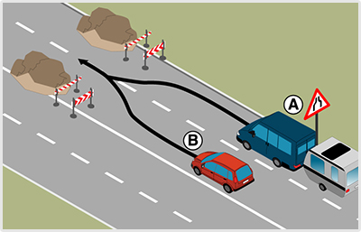
- 672. A képen látható helyen mindkét jármű csak irányváltoztatással tudja az útját folytatni. Melyik jármű haladhat tovább elsőként? #724034
- A jobbról érkező ’A’ jelű járműszerelvény.
- A balról érkező ’B’ jelű személygépkocsi.
- Kölcsönös megegyezés alapján haladhatnak tovább.
- 673. A képen látható helyen melyik jármű haladhat tovább elsőként? #724035
- Az ’A’ jelű járműszerelvény.
- A ’B’ jelű személygépkocsi.
- Kölcsönös megegyezés alapján haladhatnak tovább.
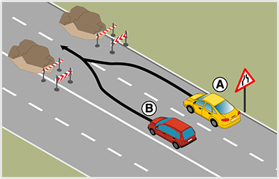
- 674. Az ábrán látható helyen mindkét jármű csak irányváltoztatással tudja az útját folytatni. Melyik jármű haladhat tovább elsőként? #724037
- A jobbról érkező ’A’ jelű személygépkocsi.
- A balról érkező ’B’ jelű személygépkocsi.
- Kölcsönös megegyezés alapján haladhatnak tovább.
- 675. Melyik jármű haladhat tovább elsőként az ábrán látható helyen? #724038
- Az ’A’ jelű személygépkocsi.
- A ’B’ jelű személygépkocsi.
- Kölcsönös megegyezés alapján haladhatnak tovább.
- 676. Ön az ’A’ jelű személygépkocsit vezeti. Az ábrán látható helyen... #724039
- elsőbbsége van a ’B’ jelű személygépkocsival szemben.
- elsőbbséget kell adnia a ’B’ jelű személygépkocsi részére.
- meg kell egyezniük a továbbhaladási sorrendben.
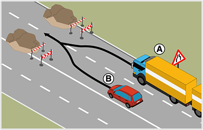
- 677. A képen látható helyen mindkét jármű csak irányváltoztatással tudja az útját folytatni. Melyik jármű haladhat tovább elsőként? #724040
- A jobbról érkező ’A’ jelű járműszerelvény.
- A balról érkező ’B’ jelű személygépkocsi.
- Kölcsönös megegyezés alapján haladhatnak tovább.
- 678. A képen látható helyen melyik jármű haladhat tovább elsőként? #724041
- Az ’A’ jelű járműszerelvény.
- A ’B’ jelű személygépkocsi.
- Kölcsönös megegyezés alapján haladhatnak tovább.
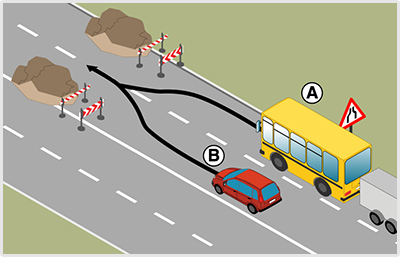
- 679. A képen látható helyen mindkét jármű csak irányváltoztatással tudja az útját folytatni. Melyik jármű haladhat tovább elsőként? #724043
- A jobbról érkező ’A’ jelű járműszerelvény.
- A balról érkező ’B’ jelű személygépkocsi.
- Kölcsönös megegyezés alapján haladhatnak tovább.
- 680. A képen látható helyen melyik jármű haladhat tovább elsőként? #724044
- Az ’A’ jelű járműszerelvény.
- A ’B’ jelű személygépkocsi.
- Kölcsönös megegyezés alapján haladhatnak tovább.
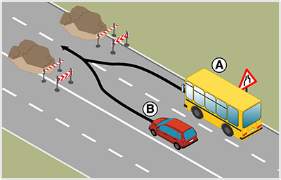
- 681. A képen látható helyen mindkét jármű csak irányváltoztatással tudja az útját folytatni. Melyik jármű haladhat tovább elsőként? #724046
- A jobbról érkező ’A’ jelű autóbusz.
- A balról érkező ’B’ jelű személygépkocsi.
- Kölcsönös megegyezés alapján haladhatnak tovább.
- 682. A képen látható helyen melyik jármű haladhat tovább elsőként? #724047
- Az ’A’ jelű autóbusz.
- A ’B’ jelű személygépkocsi.
- Kölcsönös megegyezés alapján haladhatnak tovább.
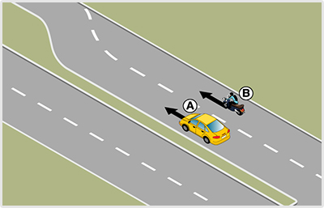
- 683. A képen látható helyen melyik jármű haladhat tovább elsőként? #724050
- Az ’A’ jelű személygépkocsi.
- A ’B’ jelű motorkerékpár.
- Kölcsönös megegyezés alapján haladhatnak tovább.
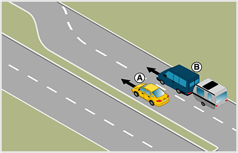
- 684. A képen látható helyen melyik jármű haladhat tovább elsőként? #724053
- Az ’A’ jelű személygépkocsi.
- A ’B’ jelű járműszerelvény.
- Kölcsönös megegyezés alapján haladhatnak tovább.
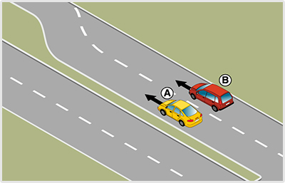
- 685. Melyik jármű haladhat tovább elsőként az ábrán látható helyen? #724056
- Az ’A’ jelű személygépkocsi.
- A ’B’ jelű személygépkocsi.
- Kölcsönös megegyezés alapján haladhatnak tovább.
- 686. Ön az ’A’ jelű személygépkocsit vezeti. Az ábrán látható helyen... #724057
- elsőbbsége van a ’B’ jelű személygépkocsival szemben.
- elsőbbséget kell adnia a ’B’ jelű személygépkocsi részére.
- meg kell egyezniük a továbbhaladási sorrendben.
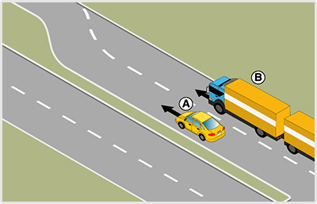
- 687. A képen látható helyen melyik jármű haladhat tovább elsőként? #724059
- Az ’A’ jelű személygépkocsi.
- A ’B’ jelű járműszerelvény.
- Kölcsönös megegyezés alapján haladhatnak tovább.

- 688. A képen látható helyen melyik jármű haladhat tovább elsőként? #724062
- Az ’A’ jelű személygépkocsi.
- A ’B’ jelű tehergépkocsi.
- Kölcsönös megegyezés alapján haladhatnak tovább.
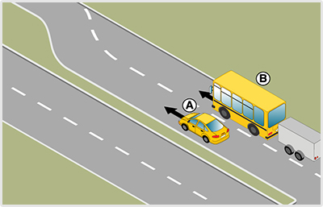
- 689. A képen látható helyen melyik jármű haladhat tovább elsőként? #724064
- Az ’A’ jelű személygépkocsi.
- A ’B’ jelű járműszerelvény.
- Kölcsönös megegyezés alapján haladhatnak tovább.
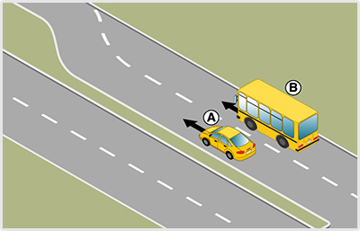
- 690. A képen látható helyen melyik jármű haladhat tovább elsőként? #724067
- Az ’A’ jelű személygépkocsi.
- A ’B’ jelű autóbusz.
- Kölcsönös megegyezés alapján haladhatnak tovább.
- 691. Ön a ’B’ jelű személygépkocsit lakott területen vezeti. Mikor jár el szabályosan? #724070
- Ha utolérve a lassabban haladó ’A’ jelű gépkocsit, megvárja, amíg az lehúzódik a jobb szélső forgalmi sávba.
- Ha előzési szándékának jelzésére hangjelzést ad.
- Ha követési távolságon belül közelíti meg a gépkocsit, és előzési szándékának jelzésére fényjelzést ad.
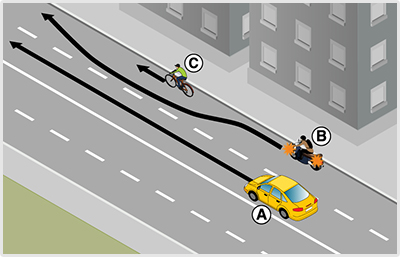
- 692. Az ábrán látható helyen számíthat-e az ’A’ jelű személygépkocsi vezetője arra, hogy a motorkerékpáros sávváltoztatás nélkül előzi meg az előtte haladó ’C’ jelű kerékpárost? #724085
- Igen, és ezt az oldaltávolság megválasztásánál célszerű figyelembe vennie.
- Nem, mert a motorkerékpáros irányjelzése azt jelenti, hogy sávot fog változtatni.
- Nem, mert két járműnek ugyanabban a forgalmi sávban tilos egymás mellett haladni.
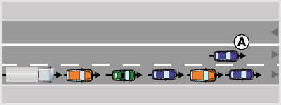
- 693. Autóúton szabályosan előzte-e meg az ábrán látható ’A’ jelű személygépkocsi a jobb szélső forgalmi sávban lassabban haladó kocsisort? #724101
- Igen.
- Igen, de csak akkor, ha a következő kereszteződésben balra szeretne kanyarodni.
- Nem, mert autóúton személygépkocsival is csak egyesével szabad a járműveket megelőzni.